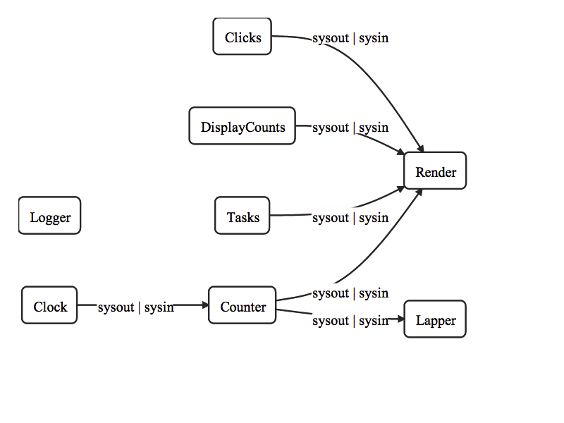

0. Demo
=======
1. Introduction
===============
Data <=> Electricity
Software <=> Chip Design
This perspective allows use to adopt ideas from,
1) Electronics Engineering
2) Systems Engineering
Currently Electronics have better,
1) Testability
2) Longetivity
3) Reliability
4) Maintainability
5) Quality
than Software Products, which are perpetually new, improved
and broken.
RDP is built on Low Level Ideas from Electronics, in hopes of
replicating its merits.
RDP isa Bread-Board Programming.
1) Tracing
2) Step Debugging
3) Profiling
4) Simulation
5) Diagram Generation
come free with RDP.
To contrast High Level Frameworks come with a promise, and just
that, of productivity improvement without any mention of debugging.
Pre-90's software was complex, innovative and done in Low Level Laguages.
Can Low Level Ideas be adapted to todays Application Complexity ?
Have we forgotten how the wheel was invented ?
2. Prototype
============
RDP for Javascript.
API - Fixed (for 0.3.x series)
Status - Beta
__variables are for internal uses.
Issues / Feedback
Development time ~~ 4 weeks
3. Roadmap for 0.4.x, 0.5.x
===========================
Get rid of "Not Found"
* C++
* Avoid memory leaks
* Avoid Data Racing
* Serialization
* Mirror latency
4. Influences
=============
In descending order,
1) Motherboard
* Pipelines
* Buses
* Interrupts
* Processing
* Stores
1.1) Pure Data
Pure data is a hallmark for Data Flow Programming.
It provides a visual wrapper for digital signal processing.
"Live" Object:
m inlets
<process>
n outlets
RDP API is modelled primarily on the above two and FSM's.
2) Hoplon
Hoplon is a new web development framework for clojurescript
based on the idea of spreadsheets.
Spreadsheets are the most user friendly interface for
Data Flow Programming.
Hoplon models Spreadsheets as Cells and Formulae.
Cell:
0 inlet
<identity>
1 outlet
Formula:
n inlets
<script>
1 outlet
3) Entity Systems
* Centralized Store
* Batch Processing
4) Gulp / RxJS
* Streams
* Generators
5) PowerShell / Pipes / XML
* CmdLet
Command:
1 inlet
<filter>
2 outlets
* Serialization
* Validation
* RSS Feeds
* OSC Messaging
4. Definitions
==============
The following words are used from an Engineering perspective.
The intent of the words is matched, innocently.
Gross mistakes will be corrected.
1) Symbol
Symbol has,
* a name
* an object
* attrs
1.1) NameSpace
A NameSpace can,
* bind
* unbind
* query
Symbols.
2) Data
A Data has,
* props
A Property has,
* a slot
* a sacalar
A Scalar is Boolean|String|Number|Array
A Data can,
* serialize
2.1) Token
A Token isa unique Data.
A Token has,
* a value
One can,
* stamp
a Token.
Stamping helps in token re-use and tracing.
start and stop are convetional tokens.
2.2) Singals and Events
A Signal isa Data with,
* a name
* a payload
An Event isa Signal with,
* a ts
2.3) Glitch
A Glitch isa Data with,
* a name
* a context
3) Entity
An Entity isa Data with,
* a id
* tags
* parts
* a ts
3.1) Part
A Part isa Data with,
* a name
During Flow, Entities gain or lose Parts.
3.2) Cell
A Cell isa Entity with,
* observers
4) System
A System has,
* inlets
* outlets
* state ( stack )
* registers
A System can,
* react
* process
* emit
* show ( a Graphic Object )
One can,
* push data into
* raise a signal
in a System.
Systems can be,
* Generators
* Filters
* Streams
* StateMachines
* Sinks
Streams are the simplest Systems with,
* feedback
* sysin
* sysout
* syserr
Components just react
5) Board
Board is a connection of Systems.
It can,
* connect inlets and outlets with Wires
* manage systems
* mirror
It has,
* a store
* a bus
5.1) Bus
A Bus is a NameSpace which can,
* trigger
5.2) Store
A Store can,
* manage
* query
Entities.
5. Example App
==============
Esti is a productivity measurement app.
It was initially meant to be a phonegapp app, but I lost my phone
and it is now a desktop app.
In phonegap, onPause and onResume could be implemented by Store serialization.
Issues / FeedbackSimulated Data
## Flow Diagram
Flow diagram was automaticall generated from source with the help of dagre-d3.
